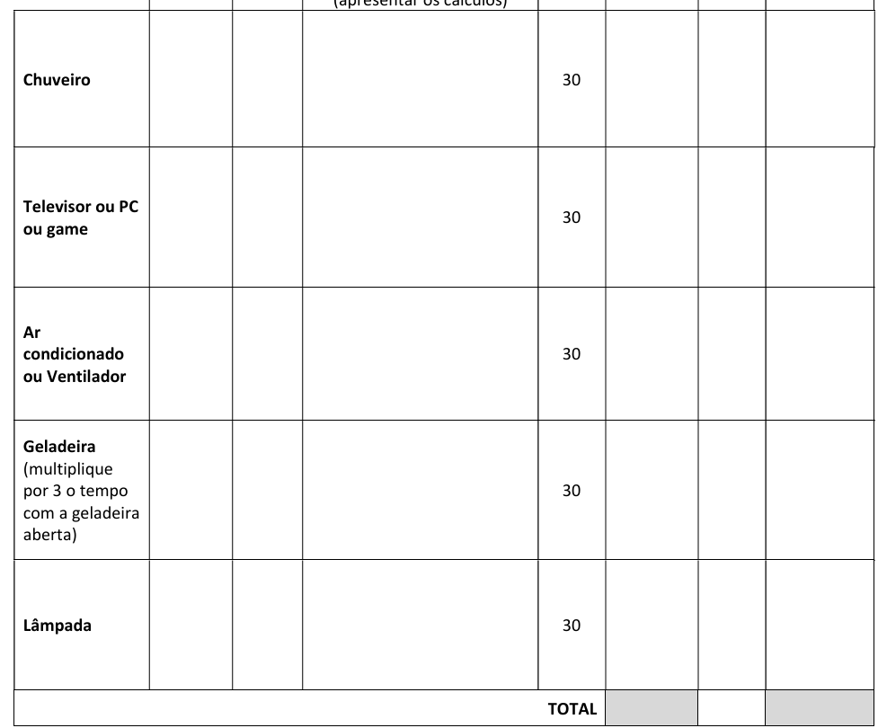
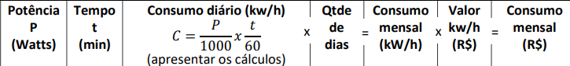

O que é a conta de matemática?

a conta era assim, com onde colocar o tempo de cada eletrônico, e o consumo de energia em watt's, os calculos eram feitos usando a informação que você mesmo forneceu.
a atividade de matemática foi feita, sendo, você pegaria o consumo de energia de cada eletrônico essencial da sua casa(no caso o chuveiro, PC, TV, ar condicionado ou ventilador, geladeira e a lâmpada).


O calculo é feito da maneira apresentada na imagem, o P representando watts, o T o tempo, os watts eram divididos por 1000 e o tempo por 60(para representar as horas/minutos), após isso você iria pegar o resultado e multiplicar pelo número de de dias, após isso, você teria o resultado do consumo mensal(KW/H) e depois teria que multiplicar esse valor pelo preço do KW/H em R$
voltar ao topo da página topo